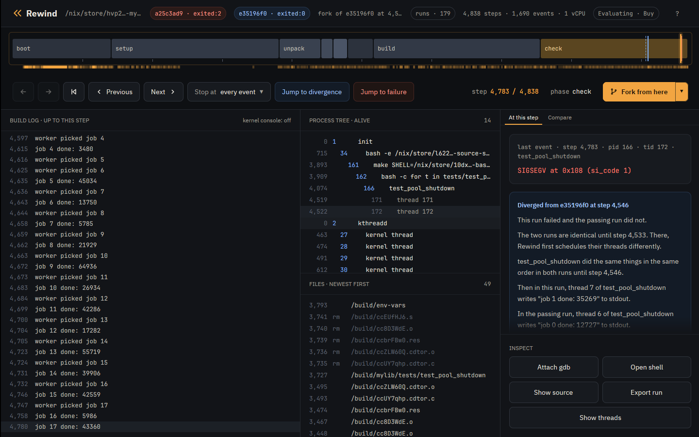

Tutorial · Nix
Tutorial: a flaky Nix build
This tutorial takes a derivation whose tests fail now and then, has Rewind VM find a failing run, looks at the crash, and checks the fix across 64 thread interleavings.
The derivation is mylib, a small C thread pool in
examples/mylib.
Its pool_shutdown frees the job queue before joining the workers, so a worker
still finishing a job can write through a freed, nulled pointer.
Every transcript below is real output from rewind on a 16 core AMD laptop.
Install
You need x86_64 Linux with KVM and Nix with flakes enabled.
$ nix profile install github:fzakaria/rewindvm
$ ls -l /dev/kvm
crw-rw-rw- 1 root kvm 10, 232 Oct 1 20:16 /dev/kvm
The build comes from rewindvm.cachix.org; say yes when Nix asks to trust it.
The desktop app is github:fzakaria/rewindvm#app. On NixOS, use the module
instead:
inputs.rewind.url = "github:fzakaria/rewindvm";
# with inputs.rewind.nixosModules.default imported
programs.rewind.enable = true;
programs.rewind.app.enable = true;
# AMD only: make the branch counter exact at every boot
programs.rewind.amdBranchCounterWorkaround = true;
If /dev/kvm is not yours to use, add yourself to the kvm group.
On AMD, run sudo rewind pmu enable once after each boot;
Counter time says why.
The flaky build
On the host the build usually passes. Rebuilt 45 times, it failed twice:
$ nix build --rebuild -L github:fzakaria/rewindvm#mylib
...
mylib> running tests/test_pool_shutdown
...
mylib> job 16 done: 5986
mylib> worker picked job 18
mylib> job 17 done: 43360
mylib> /nix/store/...-bash-5.3p15/bin/bash: line 1: 133 Segmentation fault (core dumped) ./$t
mylib> make: *** [Makefile:18: check] Error 1
error: Cannot build '/nix/store/hvp2d0h9l97d19d3xp5k3vf6xwhg4axr-mylib-0.3.0.drv'.Run it again and it usually passes, leaving nothing to look at.
Build it in Rewind VM
rewind nix builds a derivation as the Nix sandbox would, inside a
deterministic virtual machine:
$ rewind nix --epoch 1790985600 github:fzakaria/rewindvm#mylib
rewind: packing 62 store paths for mylib-0.3.0
...
rewind: run e35196f0da934c64 exited:0 after 6033 steps, 0.215s virtual, 0.736s wall (poweroff)
/nix/store/f6a9gy362szw6nxx3ikrklr8glr6rdln-mylib-0.3.0 a9d703ba89774f3d matches your store, rewindvm.cachix.org
It passes, in the same 6033 steps every time. A step is a point where the VM stops and
hands control to Rewind, such as a system call that reports a file or a process; steps
number a run's events and are where you look inside it. --epoch fixes the
VM's clock at boot, one of the run's inputs, so your runs are the ones shown here. The
last line says the output matches the copy in your store.
Find a failing interleaving
rewind check builds it again under perturbed schedules, which reschedule and
stall the VM's threads at different points, and stops at the first batch in which a build
ends differently:
$ rewind check --epoch 1790985600 github:fzakaria/rewindvm#mylib
schedule 0: exited:0 6033 steps a9d703ba8977 run e35196f0da934c64
schedule 1: exited:2 5364 steps run f6e38e32029e12b9
schedule 2: exited:0 7531 steps a9d703ba8977 run bace2959cd1a7609
schedule 3: exited:0 7805 steps a9d703ba8977 run 72fda384720d3d09
schedule 4: exited:0 7935 steps a9d703ba8977 run 9324a61b874ed09f
schedule 5: exited:0 7562 steps a9d703ba8977 run 1f58a22d9d1d3e11
schedule 6: exited:0 7619 steps a9d703ba8977 run 8c218469ead68840
schedule 7: exited:0 7643 steps a9d703ba8977 run 8b6ad224f154f955
schedule 8: exited:2 5842 steps run 0281c776bba6e6f7
schedule 9: exited:2 5377 steps run 4fe19139bdd3bf06
schedule 10: exited:2 5392 steps run 956b799a1af0aca0
schedule 11: exited:0 7640 steps a9d703ba8977 run a4730d40d05cb02e
schedule 12: exited:0 7791 steps a9d703ba8977 run eb5c975cf7980a34
schedule 13: exited:2 5953 steps run 01f557942934f577
schedule 14: exited:0 7708 steps a9d703ba8977 run 247acef69f8334f5
schedule 15: exited:0 7830 steps a9d703ba8977 run 326d07fbb33fd16c
schedule 16: exited:0 7612 steps a9d703ba8977 run 88d3d8e26a79595d
schedule 1 ends differently from schedule 0; finding the step that decides it
schedule 1 limited to steps 4533..4759 still ends differently
step 4758 decides it: a request to switch threads and a 640 µs pause of the running thread there makes the run fail
passing: run bcdb4788ffc5bce2, schedule 1 over steps 4533..4758
failing: run 455a57d2ee648d59, schedule 1 over steps 4533..4759
the two are the same run until step 4758
where ./tests/test_pool_shutdown first behaves differently:
both 4746 166/172 write(1, "job 15 done: 42559\n")
both 4747 166/172 write(1, "worker picked job 17\n")
both 4758 166/171 write(1, "job 16 done: 5986\n")
failing 4770 166/172 thread exit(test_pool_shutd) exited:0
failing 4782 166/171 SIGSEGV code=1 addr=0x108
failing 4786 166/171 thread exit(test_pool_shutd) killed:SIGSEGV
failing 4790 166/166 exit_group(test_pool_shutd) killed:SIGSEGV
passing 4759 166/171 write(1, "worker picked job 18\n")
passing 4771 166/172 thread exit(test_pool_shutd) exited:0
passing 4775 166/171 thread exit(test_pool_shutd) exited:0
passing 4778 166/166 write(1, "round 2: ok\n")
open both in the desktop app: rewind open 455a57d2ee648d59 4770 --compare bcdb4788ffc5bce2
Schedules 1, 8, 9, 10 and 13 fail. check narrows schedule 1's failure to one
step, 4758. The passing run perturbs the same steps less that one, so the two runs are the
same until 4758, and only the failing one gets a request to switch threads and a 640 µs
pause of the running thread there. The search took 13 seconds.
The last block shows where the test's own events then differ. The first difference is the cause, showing up before the symptom: at step 4770 the other worker, thread 172, exits. While thread 171 is held at the deciding step, the test shuts the pool down, and the other worker finds it stopping and leaves; in the passing run thread 171 picks job 18 first, and the other worker exits after that. Thread 171's SIGSEGV comes 12 steps later, at step 4782.
--all tries every schedule, which measures how flaky a build is:
$ rewind check --all --epoch 1790985600 github:fzakaria/rewindvm#mylib | grep 'ended differently'
16 of 64 other schedules ended differentlyLook at the failure
The failing run keeps every event with its step:
$ rewind log 455a57d2 --steps | tail -4
4747 166 worker picked job 17
4758 166 job 16 done: 5986
4794 162 /nix/store/...-bash-5.3p15/bin/bash: line 1: 166 Segmentation fault ./$t
4798 161 make: *** [Makefile:18: check] Error 1
$ rewind events 455a57d2 --from 4758 --to 4784
4758 166/171 write(1, "job 16 done: 5986\n")
4770 166/172 thread exit(test_pool_shutd) exited:0
4780 0/0 console "[ 0.199340] test_pool_shutd[171]: segfault at 108 ip 000055c06fa1d437 sp 00007fda39950e10 error 6 in test_pool_shutdown[1437,55c06fa1d000+1000] likely on CPU 0 (core 0, socket 0)"
4781 0/0 console "[ 0.199345] Code: fa 48 8d 35 2a 0c 00 00 bf 02 00 00 00 b8 00 00 00 00 e8 ac fc ff ff 48 8b 05 b5 2b 00 00 48 8b 38 e8 8d fc ff ff 49 8b 46 58 <83> 80 08 01 00 00 01 e9 b5 fe ff ff 55 48 89 e5 41 54 53 be 78 00"
4782 166/171 SIGSEGV code=1 addr=0x108
The kernel's report marks the faulting instruction,
<83> 80 08 01 00 00 01: addl $1, 0x108(%rax), which is
p->queue->completed++ with p->queue null. The processes
alive at the crash:
$ rewind ps 455a57d2 4782
1 /init
34 bash -e /nix/store/...-source-stdenv.sh /nix/store/...-default-builder.sh
161 make SHELL=/nix/store/...-bash-5.3p15/bin/bash PREFIX=$(out) VERBOSE=y check
162 /nix/store/...-bash-5.3p15/bin/bash -c for t in tests/test_pool_basic tests/test_pool_shutdown; do echo "running $t"; ./$t || exit 1; done
166 ./tests/test_pool_shutdown
171 (thread)Look inside the VM
rewind cat, rewind shell and rewind gdb work on a
throwaway fork of the run at a step. At the SIGSEGV, step 4782:
$ rewind cat 455a57d2 4782 src/pool.c --pid 166 | sed -n '/^void pool_shutdown/,/^}/p'
void pool_shutdown(struct pool *p)
{
pthread_mutex_lock(&p->lock);
p->stopping = 1;
pthread_cond_broadcast(&p->ready);
pthread_mutex_unlock(&p->lock);
/* The bug: the queue goes before the workers are joined. */
free(p->queue);
p->queue = NULL;
for (int i = 0; i < POOL_WORKERS; i++)
pthread_join(p->workers[i], NULL);
pthread_cond_destroy(&p->ready);
pthread_mutex_destroy(&p->lock);
free(p);
}
$ printf 'pwd; ls; exit\n' | rewind shell 455a57d2 4782 --pid 166
rewind: a shell at step 4782 of 455a57d2ee648d59; exit it to leave
[rewind] /build/mylib # pwd; ls; exit
/build/mylib
Containerfile Makefile libmylib.a src tests
rewind gdb loads the symbols of the VM's kernel and of the process running at
the step. From step 4758, thread 171's last write, continue to the line that faulted:
$ rewind gdb 455a57d2 4758 -- -batch -ex 'break src/pool.c:77 if p->queue == 0' -ex continue -ex 'bt 3' -ex 'p p->queue' -ex list
rewind: step 4758 ran in process 166; loading symbols for 4 of its files
rewind: fetched 3 source files from the VM
rewind: gdb at step 4758 of 455a57d2ee648d59
Downloading 10.70 K separate debug info for /nix/store/h4wfwic161kxrr74jlzla5lsm28hgary-glibc-2.44-25/lib/libpthread.so.0...
Downloading 4.35 M separate debug info for /nix/store/h4wfwic161kxrr74jlzla5lsm28hgary-glibc-2.44-25/lib/libc.so.6...
Downloading 658.16 K separate debug info for /nix/store/h4wfwic161kxrr74jlzla5lsm28hgary-glibc-2.44-25/lib/ld-linux-x86-64.so.2...
Downloading 3.12 K source file /build/linux-7.2.8/./arch/x86/include/asm/irqflags.h...
arch_local_irq_restore (flags=518) at ./arch/x86/include/asm/irqflags.h:146
146 return !(flags & X86_EFLAGS_IF);
[Switching to thread 3 (Thread 1.171)]
Downloading 1.79 K source file /build/glibc-2.44/nptl/../sysdeps/unix/sysv/linux/x86_64/syscall_cancel.S...
#0 __syscall_cancel_arch () at ../sysdeps/unix/sysv/linux/x86_64/syscall_cancel.S:56
56 ret
Breakpoint 1 at 0x55c06fa1d433: file src/pool.c, line 77.
[Thread 1.172 exited]
Thread 3 hit Breakpoint 1, worker (arg=0x55c074530010) at src/pool.c:77
77 p->queue->completed++;
#0 worker (arg=0x55c074530010) at src/pool.c:77
#1 0x00007fda399f47d1 in start_thread (arg=<optimized out>) at pthread_create.c:454
#2 0x00007fda39a80b1c in __GI___clone3 () at ../sysdeps/unix/sysv/linux/x86_64/clone3.S:78
$1 = (struct queue *) 0x0
72 * the bug. */
73 long result = run_job(job);
74 if (!p->stopping) {
75 printf("job %d done: %ld\n", job, result & 0xffff);
76 fflush(stdout);
77 p->queue->completed++;
78 }
79 }
80 }
81
[Inferior 1 (process 1) detached]
The breakpoint is one of the CPU's debug registers, so the fork runs unchanged until line
77 with p->queue null. Without --, gdb stays open for you to
type into.
Replay it
$ rewind replay 455a57d2
identical to the recording: 1687 events, 1114 context switches and 1476 read and write records over 4823 steps, and the whole machine at its 4 keyframes
$ rewind replay 455a57d2 --from 4533
identical to the recording from the keyframe at step 256 to the end, and the whole machine at its 3 keyframes (0.40s)
--from starts at the nearest keyframe before the step. A keyframe is a copy
of the VM's whole state, registers and memory, that recording saves every so many steps,
so a replay can start there instead of at boot. A run replays on any machine with the same
CPU vendor that has the features of the run's CPU model.
Fork it
A fork is its parent up to a step, then another schedule:
$ rewind fork e35196f0 4533 --schedule 1 --quiet
rewind: run a25c3ad9167d9412 exited:2 after 4838 steps, 0.200s virtual, 0.066s wall (poweroff)
rewind: the fork first differs from its parent at step 4546
rewind: open it beside its parent in the desktop app: rewind open a25c3ad9167d9412 4546 --compare e35196f0da934c64
$ rewind fork e35196f0 4533 --schedule 2 --quiet
rewind: run fd3ea41791df132e exited:2 after 4802 steps, 0.199s virtual, 0.067s wall (poweroff)
rewind: the fork first differs from its parent at step 4552
rewind: open it beside its parent in the desktop app: rewind open fd3ea41791df132e 4552 --compare e35196f0da934c64
$ rewind fork e35196f0 4533 --schedule 3 --quiet
rewind: run 6625a3557e7b0fac exited:0 after 6562 steps, 0.222s virtual, 0.119s wall (poweroff)
rewind: the fork first differs from its parent at step 4573
rewind: open it beside its parent in the desktop app: rewind open 6625a3557e7b0fac 4573 --compare e35196f0da934c64
$ rewind fork e35196f0 4533 --schedule 4 --quiet
rewind: run 9f4f8b27cf7b2b11 exited:0 after 6557 steps, 0.220s virtual, 0.120s wall (poweroff)
rewind: the fork first differs from its parent at step 4547
rewind: open it beside its parent in the desktop app: rewind open 9f4f8b27cf7b2b11 4547 --compare e35196f0da934c64
From step 4533 of the schedule 0 build, schedules 1 and 2 crash and schedules 3 and 4
pass. Of schedules 1 to 32 from that step, 6 crash. check --run asks many
schedules at once; the
advanced tutorial
shows it.
Scrub it in the app
The desktop app shows a run on a timeline: drag the playhead to any step for the output,
processes, files and event there, jump to the failure or to where the run left the passing
one, and fork from the playhead. Opened on check's two runs, a dashed blue
mark on the timeline is step 4758, where only the failing run gets a request to switch
threads and a 640 µs pause of the running thread.

$ rewind-app ~/.local/share/rewind/runs/455a57d2ee648d59 --compare ~/.local/share/rewind/runs/bcdb4788ffc5bce2
Press f to jump to the failure at step 4782, then s to open the source panel. After a few
seconds it shows worker at src/pool.c:77, with
p->queue->completed++; marked: the line that read the queue after
pool_shutdown had set it to NULL. The t key shows which thread held the CPU
around where the two runs part.
Fix it and check the fix
Clone the repository to edit the flake's mylib:
$ git clone https://github.com/fzakaria/rewindvm
$ cd rewindvm
In examples/mylib/src/pool.c, count the job under the lock, and free the
queue after the workers are joined:
@@ -71,11 +71,13 @@
* stopping. The check and the count are not under the lock:
* the bug. */
long result = run_job(job);
+ pthread_mutex_lock(&p->lock);
if (!p->stopping) {
printf("job %d done: %ld\n", job, result & 0xffff);
fflush(stdout);
p->queue->completed++;
}
+ pthread_mutex_unlock(&p->lock);
}
}
@@ -120,12 +122,10 @@
pthread_cond_broadcast(&p->ready);
pthread_mutex_unlock(&p->lock);
- /* The bug: the queue goes before the workers are joined. */
- free(p->queue);
- p->queue = NULL;
-
for (int i = 0; i < POOL_WORKERS; i++)
pthread_join(p->workers[i], NULL);
+ free(p->queue);
+ p->queue = NULL;
pthread_cond_destroy(&p->ready);
pthread_mutex_destroy(&p->lock);
free(p);$ rewind check --all --epoch 1790985600 .#mylib
...
0 of 64 other schedules ended differently
same result under all 65 schedulesBefore the fix, 16 of the same 64 schedules crashed.
Limits
The VM has one vCPU, so threads interleave but never run at the same instant: a race between plain loads and stores with no system call between them is out of reach, while races across a system call, a lock or a sleep, like this one, are in reach. Design has the full list.
What to read next
- The container tutorial: the same bug from a Docker image, with no Nix.
- The advanced tutorial: threads, watchpoints, the kernel's side of a crash, sharing a run and more.
- Counter time: how the VM's clock follows its work.
The engine is free and MIT licensed. The desktop app is $49 personal or $99 per seat.